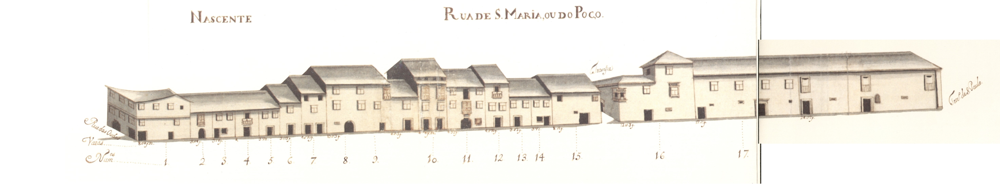

Rua de Sta. Maria ou do Poço
Imagens antigas:

Imagens atuais:


Descrição:
Longa e importantíssima artéria que ligava a Catedral com o terreiro de S. Paulo ou de S. Tiago onde existia a principal porta da cidade virada a Sul, a Porta de S. Tiago, depois chamada do Colégio. Catedral com o terreiro de S. Paulo ou de S. Tiago onde existia a principal porta da cidade virada a Sul, a Porta de S. Tiago, depois chamada do Colégio.
Rua de farta história foi um eixo fundamental da cidade, só deixando de o ser a partir da data em que o centro se mudou para o eixo rua do Souto-Arcada. rua do Souto-Arcada.
Na Idade Média era por aqui que se tinha acesso à feira que se fazia algures, junto à porta da muralha, no Terreiro de S. Tiago. Nela também talvez tivesse havido um mercado de forragens, pois foi conhecida, no séc. XIV, com o nome de rua da Erva. muralha, no Terreiro de S. Tiago. Nela também talvez tivesse havido um mercado de forragens, pois foi conhecida, no séc. XIV, com o nome de rua da Erva.
No séc. XV, instalou-se em casa logo pegada à actual Igreja de Santiago, a Sinagoga, sendo arruada esta artéria aos judeus, por decisão do Senado; a rua passou então a ser conhecida como rua da Judiaria. séc. XV, instalou-se em casa logo pegada à actual Igreja de Santiago, a Sinagoga, sendo arruada esta artéria aos judeus, por decisão do Senado; a rua passou então a ser conhecida como rua da Judiaria.
Em 1465, pelo menos, foi decidido mudar os judeus para uma rua que não ficasse tão próxima da Sé, pois causava má impressão haver tantas moradas de «casas de hereges» em local tão próximo da Catedral, ou Igreja de Santa Maria de Braga. 1465, pelo menos, foi decidido mudar os judeus para uma rua que não ficasse tão próxima da Sé, pois causava má impressão haver tantas moradas de «casas de hereges» em local tão próximo da Catedral, ou Igreja de Santa Maria de Braga.
Começou então a ser conhecida por rua de Santa Maria e, também, por rua da Judiaria Velha. rua de Santa Maria e, também, por rua da Judiaria Velha.
Entretanto instalou-se no contíguo terreiro de S. Tiago o Colégio de S. Paulo, onde existiram os Estudos Gerais. terreiro de S. Tiago o Colégio de S. Paulo, onde existiram os Estudos Gerais.
No séc. XVIII, tinha o nome de rua do Poço, que provinha de um poço municipal existente quase no extremo Noroeste desta artéria que serviu desde a Idade Média até ao séc. XIX. A metade Sul, além da rua das Travessas, foi também conhecida pelo nome de rua de S. Tiago. séc. XVIII, tinha o nome de rua do Poço, que provinha de um poço municipal existente quase no extremo Noroeste desta artéria que serviu desde a Idade Média até ao séc. XIX. A metade Sul, além da rua das Travessas, foi também conhecida pelo nome de rua de S. Tiago.
Alargada em fins do séc. XIX, manterá a sua importância como eixo. O comércio, esse, é que não voltou. séc. XIX, manterá a sua importância como eixo. O comércio, esse, é que não voltou.
Hoje perdeu quase todas as casas que vemos no Mappa; e algumas eram bem interessantes como, por exemplo, a casa do prazo n.° 16, com uma bela janela de canto, renascentista.
Das 18 casas existentes no lado Nascente e 14 do lado Poente eram prazos do Cabido 16 e 11 respectivamente. Cabido 16 e 11 respectivamente.
Tendo recebido ainda outros nomes, foi em 24 de Fevereiro de 1944 designada de rua D. Gonçalo Pereira, que mantém. 24 de Fevereiro de 1944 designada de rua D. Gonçalo Pereira, que mantém.
Lista das casas
-
Número 1 Enfiteuta ??? Foro ??? Descrição Corresponde ao n.º 17 da Rua das Oussias, para onde tem a frontaria e serventia principais.Rua das Oussias, para onde tem a frontaria e serventia principais.
-
Número 2 Enfiteuta Padre José Lopes Foro 420 reis e 2 galinhas Descrição ??? -
Número 3 Enfiteuta Padre José Lopes Foro 250 reis e 2 galinhas Descrição ??? -
Número 4 Enfiteuta António Ferreira, moleiro Foro 125 reis e galinha Descrição Estas casas, juntamente com o n.º 5 foram construídas depois de 1543, em pertenças do n.º3.1543, em pertenças do n.º3.
-
Número 5 e 6 Enfiteuta ??? Foro ??? Descrição Aqui vivem os vigário da Sé. O Cabido doou o n.º 5 (depois de 1703), e o n.º 6 (depois de 1631), aos vigários da Sé, para sua residência. A casa n.º 5 foi construída em pertenças do n.º 4, a partir do referido ano de 1703. Sé. O Cabido doou o n.º 5 (depois de 1703), e o n.º 6 (depois de 1631), aos vigários da Sé, para sua residência. A casa n.º 5 foi construída em pertenças do n.º 4, a partir do referido ano de 1703.
-
Número 7 Enfiteuta Dr. Francisco Gomes do Couto Foro 180 reis e 4 galinhas Descrição Foi construída depois de 1559, em pertenças que foram do n.º 6.1559, em pertenças que foram do n.º 6.
-
Número 8 e 9 Enfiteuta Lic. Paulo de Sousa de Magalhães, de Barcelos Foro 1270 reis, 6 galinhas e 2 capões Descrição O n.º 8 foi unida, num só prazo, ao n.º 9.
-
Número 10 Enfiteuta Francisco Pereira, alfaiate e sua mulher, Francisca de Campos Foro 250 reis e 2 capões Descrição O emprazamento foi feito no ano de 1727.1727.
-
Número 11 Enfiteuta Manuel Francisco, tratante, e sua mulher, Teresa Antunes Foro 210 reis e 4 galinhas Descrição A designação de «Casa do Poço» advém-lhe do poço que possuia junto à rua.
-
Número 12 Enfiteuta Padre Diogo da Rocha Foro 110 reis e 1 capão Descrição Foi construída depois de 1727, em pertenças do n.º 5, da rua Pequena.1727, em pertenças do n.º 5, da rua Pequena.
-
Número 13, 14 e 15 Enfiteuta ??? Foro ??? Descrição Correspondem ao n.º 7 da travessa que vai da Rua de Santa Maria ou do Poço para a do Forno, para onde têm a frontaria e serventia principais. O n.º 13 foi unido, num só prazo, ao n.º 14, depois do ano de 1561. Posteriormente, no ano de 1672, foram unidas ao n? 15. Em 1681, foram feitas escrituras de sub-emprazamento das casas 13 e 14, à face do n.º 15.Rua de Santa Maria ou do Poço para a do Forno, para onde têm a frontaria e serventia principais. O n.º 13 foi unido, num só prazo, ao n.º 14, depois do ano de 1561. Posteriormente, no ano de 1672, foram unidas ao n? 15. Em 1681, foram feitas escrituras de sub-emprazamento das casas 13 e 14, à face do n.º 15.
-
Número 16 Enfiteuta ??? Foro ??? Descrição Corresponde ao n.º 6 da travessa que vai da Rua de Santa Maria ou do Poço para a do Forno, para onde têm a frontaria e serventia principais.Rua de Santa Maria ou do Poço para a do Forno, para onde têm a frontaria e serventia principais.
-
Número 17 Enfiteuta D. Bernarda Inácia Pereira Pimentel, viúva de José de Coimbra e Andrade, da cidade de Braga Foro 80 reis e 1 galinha Descrição O emprazamento é de 1744. Foi construída em pertenças do n.º 16, depois do ano de 1524. Confronta, do sul, com o Hospital de Santiago ou das Velhas, do morgado de Real.1744. Foi construída em pertenças do n.º 16, depois do ano de 1524. Confronta, do sul, com o Hospital de Santiago ou das Velhas, do morgado de Real.
-
Número 18 Enfiteuta Os herdeiros de Manuel Machado, alfaiate Foro 170 reis e 1 galinha Descrição Confronta, do sul, com casa foreira à comenda de Riofrio.Riofrio.
-
Número 19 Enfiteuta ??? Foro ??? Descrição A casa é foreira à obra da Sé. São enfiteutas, os herdeiros de Manuel Nogueira, sapateiro, que pagam de foro 120 reis.Sé. São enfiteutas, os herdeiros de Manuel Nogueira, sapateiro, que pagam de foro 120 reis.
-
Número 20 Enfiteuta Padre Custódio Correira, vigário de Santiago Foro 680 reis e 2 galinhas Descrição O enfiteuta herdara este prazo de seu tio, o Padre João Correia, vigário da Igreja de Santiago da Cividade.Padre João Correia, vigário da Igreja de Santiago da Cividade.
-
Número 21 Enfiteuta Os herdeiros de Francisco de Almeida Cabral, meirinho do Secular da cidade de Braga Foro 700 reis e 4 galinhas Descrição A este prazo pertencem as casas n.ºs 1 e 2 da travessa que vai da Rua do Poço para a de D. Gualdim. Confronta, do norte, com a dita travessa. No ano de 1609 o n.º 2 da mesma travessa foi unido, num só prazo, ao n.º 21. Rua do Poço para a de D. Gualdim. Confronta, do norte, com a dita travessa. No ano de 1609 o n.º 2 da mesma travessa foi unido, num só prazo, ao n.º 21.
-
Número 22 Enfiteuta Dr. Francisco Gomes do Couto Foro 340 reis e 2 galinhas Descrição O n.º 23 foi construído em pertenças do n° 22, no ano de 1543.1543.
-
Número 23 Enfiteuta Dr. Francisco Gomes do Couto Foro 600 reis e 4 galinhas Descrição O n.º 23 foi construído em pertenças do n° 22, no ano de 1543.1543.
-
Número 24 Enfiteuta Os herdeiros do Cónego Bento da Silva Teles Foro 720 reis e 2 galinhas Descrição ??? -
Número 25 Enfiteuta Cónego Francisco da Silva Teles Foro 900 reis e 4 galinhas Descrição O enfiteuta foi sobrinho e herdeiro do Cónego Bento da Silva Teles.Cónego Bento da Silva Teles.
-
Número 26 Enfiteuta Dr. Francisco Gomes do Couto Foro 90 reis e 1 galinha Descrição Estiveram unidas, num só prazo, entre os anos de 1554 e 1670.1554 e 1670.
-
Número 27 Enfiteuta Dr. Francisco Gomes do Couto Foro 140 reis e 1 galinha Descrição Estiveram unidas, num só prazo, entre os anos de 1554 e 1670.1554 e 1670.
-
Número 28 Enfiteuta António de Campos Peixoto Foro 290 reis e 2 galinhas Descrição ??? -
Número 29 e 30 Enfiteuta Tomaz de Araújo e Brito, Abade Foro 600 reis e 6 galinhas Descrição Estão unidas, num só prazo, desde o ano de 1574. Em 1631 foi-lhe incorporada um casa, dízima a Deus, que o Mestre Escola, Cristóvão de Matos, doara ao Cabido. A casa n.º 30 confronta, do norte, com casa foreira à capela de S. Bento, a qual fica situada debaixo do coro da Sé.1574. Em 1631 foi-lhe incorporada um casa, dízima a Deus, que o Mestre Escola, Cristóvão de Matos, doara ao Cabido. A casa n.º 30 confronta, do norte, com casa foreira à capela de S. Bento, a qual fica situada debaixo do coro da Sé.
-
Número 31 Enfiteuta ??? Foro ??? Descrição Corresponde ao n.º 1 da Praça do Pão, para onde tem a frontaria e serventia principais.Praça do Pão, para onde tem a frontaria e serventia principais.